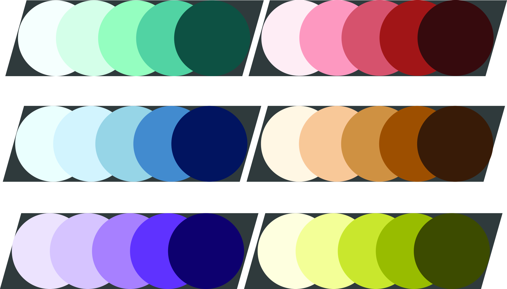
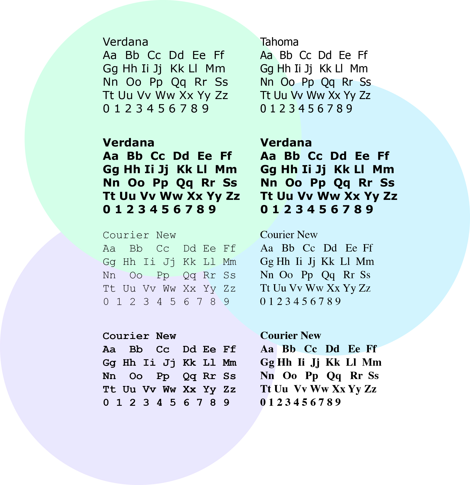

HOW IT WORKS
The Visual Locator is an application that uses VR and GPS to locate where you are and show you the route to your destination. The app will also have a funtion of random destination mode where the users destination will be random to where they are and it takes the user on an AR experience. There will also be an offline mode for when there is no access to internet. The arrow follows your GPS signal and points in the direction that is selected as your destination in sense showing you the way you need to go visually. The arrow will be smooth rotating so no matter what direction you point the arrow will stay facing the right direction. I could be described as an Augmented reality version of google maps which is useful for people who are bad at reading maps or find that direction can be difficult when it comes to google maps.TARGET AUDIENCE
The type of people who would use this app would be people who find google maps too hard to use as maps can be hard to read, it takes the map out of the mapping app and puts the user into an experience where they follow an arrow to get to their destination. The rendom destination mode is made in the app for the people who want to explore their city and dont know where to start. It could also be used for people who want to go for a walk and are unsure where they want to go, so when the user goes into this mode they select how ling they want to walk for in distance or time and start following the app.VISUAL INTENT
The app will open up into the normal mode, but the modes will be able to be changed in the quick menu. The app will also be a minimalistic style so it stays simple. There will be an arrange of options in the menus like normal mode, random destination mode and offline mode. There will also be a seetings and report button. The colour scheme will be very cool colours but there will be parts in the app that have warmer colours to contrast. When the user opens up the random destination mode or normal mode the app will ask for a destination or it will display through the camera with an arrow pointing which direction to go. I will probably make the font Verdana for titles as the letters are more spread out and easier to read and anything text based Tahoma as the letters are closer together which will give more space if needed, but I have added some other fonts in to trial them.INSPIRATION
I was inspired to do this because I wanted to use AR and learn how to code it in an app as apps are becoming more reliant on AR. After coming up with the idea apps like google maps and pokemon go were very interesting to merge my idea into. Pokemon Go was was very inspiring as it was one of the first apps to use AR for a game. Google maps and Mercedes-Benz have made similar ideas to this one, I want to merge the two ideas together as Mercedes has AR technology in their latest cars but it isn't mobile and Google maps has the technology but dont want to release it for public use. I have linked these companies in the footer.COLOUR SAMPLES
FONTS AND TEXT TYPE
Mockup